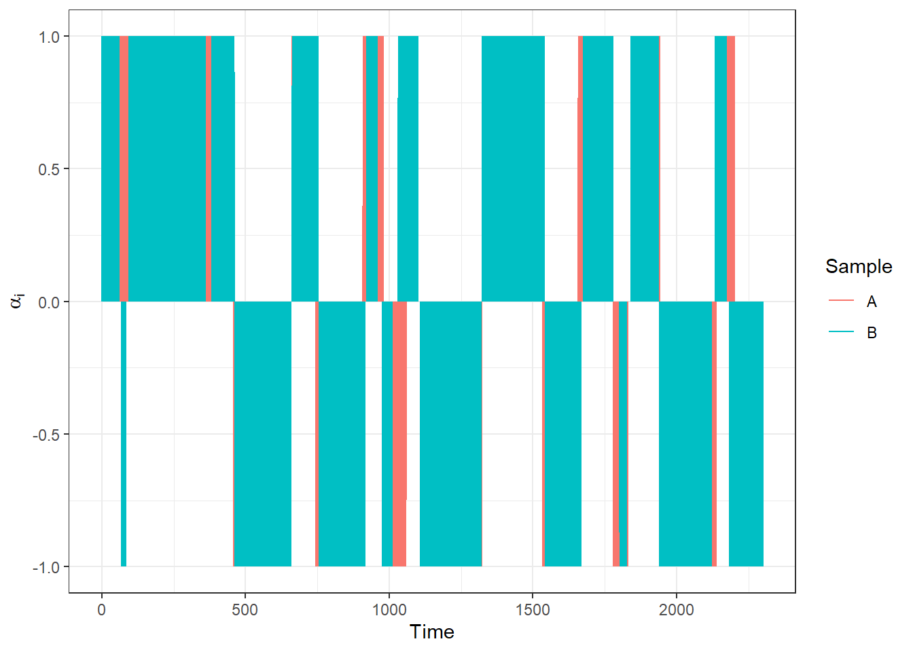
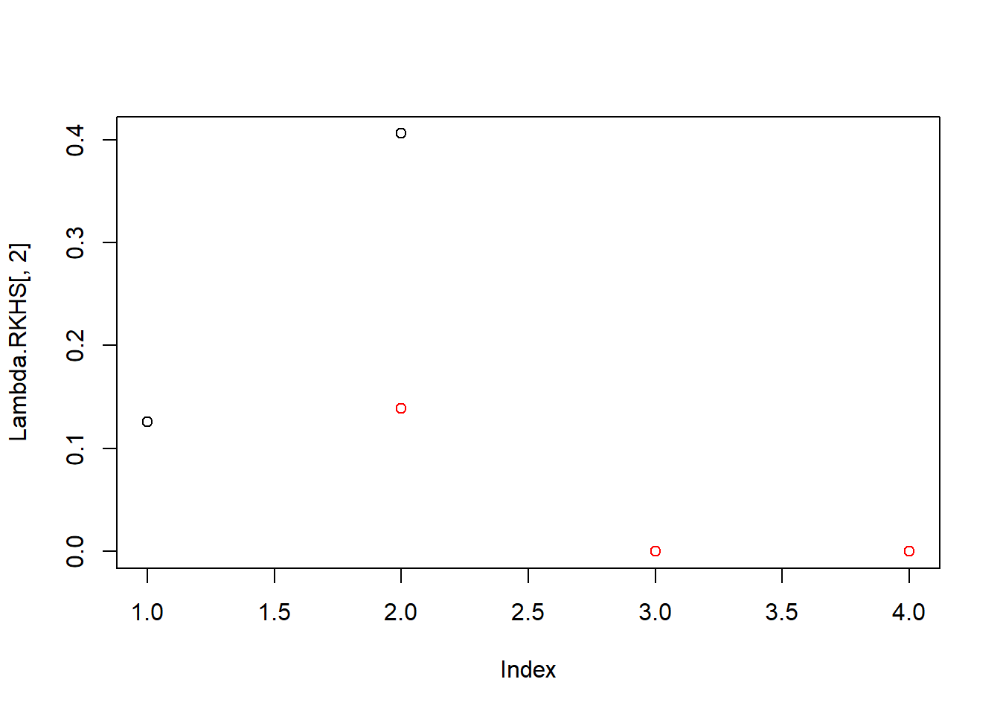
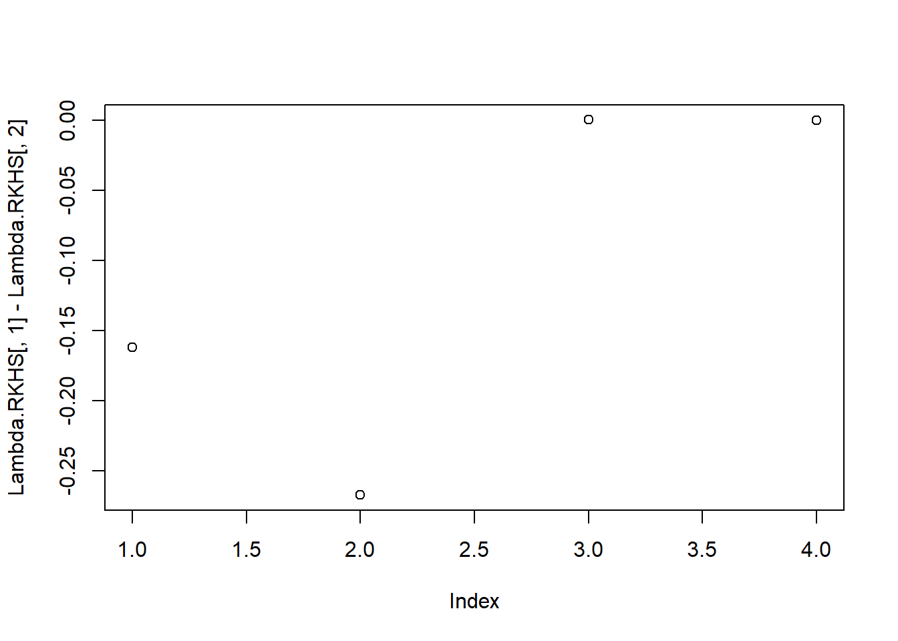

5.1 handwrit data
Nejprve si načteme data, která představují souřadnice ručně psaných slov fda. Pro naše účely, kdy chceme porovnat dvě různá pozorování, si načtěme pouze první dva záznamy.
Pro lepší orientaci si data nejprve vykresleme. Nejprve celkový záznam nápisu fda, následně jednotlivé souřadnice \(x\) a \(y\) proti času.
Nyní se podívejme, jak dopadnou vektory koeficientů \(\boldsymbol \alpha_1\), \(\boldsymbol \alpha_2\) z jádrového vyjádření získaného pomocí SVM pro regresi a také jak vypadají \(\boldsymbol \lambda_1\), \(\boldsymbol \lambda_2\) pro RKHS reprezentaci. Vektory \(\boldsymbol \alpha_1\) a \(\boldsymbol \alpha_2\) definují reprezentaci křivek
\[ c_l^*(\boldsymbol x) = \sum_{i = 1}^m \alpha_{il} K(\boldsymbol x_i, \boldsymbol x), \quad \forall \boldsymbol x \in \mathcal X, \]
kde \(\alpha_{il} \in \mathbb R, l= 1, 2.\). Podobně vektory \(\boldsymbol \lambda_1\) a \(\boldsymbol \lambda_2\) definují vyjádření křivek v bázi RKHS \(\mathcal H_K\)
\[ c_l^*(\boldsymbol x) = \sum_{j = 1}^d \lambda_{jl}^* \phi_j(\boldsymbol x), \]
které můžeme odhadnout z dat pomocí
\[ \hat\lambda_{jl}^* = \hat\lambda_{jl} \sum_{i = 1}^m \alpha_{il}\hat\phi_{ji}, \quad j = 1, 2, \dots, \hat d. \]
Uvažme Gaussovské jádro s parametrem \(\gamma = 0.5\) (analogicky jako ve výše zmíněném článku).
Code
gamma <- 0.5
# jadro a jadrova matice ... Gaussovske s parametrem gamma
Gauss.kernel <- function(x, y, gamma) {
return(exp(-gamma * norm(c(x - y) |> t(), type = 'F')^2))
}
Kernel.RKHS <- function(x, gamma) {
K <- matrix(NA, ncol = length(x), nrow = length(x))
for(i in 1:nrow(K)) {
for(j in 1:ncol(K)) {
K[i, j] <- Gauss.kernel(x = x[i], y = x[j], gamma = gamma)
}
}
return(K)
}Nyní si spočítejme pomocí funkce svm() z knihovny e1071 vektory koeficientů \(\boldsymbol \alpha_1\) a \(\boldsymbol \alpha_2\). Uvědomme si, že funkce svm() vrací koeficienty pouze pro podpůrné vektory, pro ostatní jsou tyto koeficienty nulové.
Code
# urceni koeficientu alpha z SVM
alpha <- matrix(0, nrow = length(handwritTime),
ncol = length(samples)) # prazdny objekt
# model
for(i in 1:length(samples)) {
df.svm <- data.frame(x = hand[, i, 1],
y = hand[, i, 2])
svm.RKHS <- svm(y ~ x, data = df.svm,
kernel = 'radial',
type = 'eps-regression',
epsilon = 0.03,
gamma = gamma,
cost = 1,
tolerance = 0.001,
shrinking = TRUE,
scale = TRUE)
# svm.RKHS <- train(y ~ x, data = df.svm,
# method = 'svmLinear')
# urceni alpha
# b <- - svm.RKHS$rho # rho ... the negative intercept
# betas <- svm.RKHS$coefs
# alphas <- betas + b #/ Gauss.kernel()
alpha[svm.RKHS$index, i] <- svm.RKHS$coefs # nahrazeni nul koeficienty
}Code
# plot(alpha[, 1], type = 'n', ylab = expression(alpha[i]))
# segments(x0 = 1:1401, y0 = 0, y1 = alpha[, 1])
data.frame(alpha = c(alpha[, 1], alpha[, 2]),
Time = c(handwritTime, handwritTime),
Sample = rep(c('A', 'B'), each = length(handwritTime))) |>
ggplot(aes(xend = Time, x = Time, y = 0, yend = alpha, colour = Sample)) +
geom_segment() +
theme_bw() +
labs(x = 'Time',
y = expression(bold(alpha)[i])) 
Code
Code
# d
d.RKHS <- rankMM(K)
# urceni vektoru lambda
Lambda.RKHS <- matrix(NA,
ncol = dim(hand)[2],
nrow = d.RKHS) # vytvoreni prazdneho objektu
# vypocet reprezentace
Lambda.RKHS[, 1] <- (t(eig.vectors[, 1:d.RKHS]) %*% alpha[, 1]) *
eig.vals[1:d.RKHS]
Lambda.RKHS[, 2] <- (t(eig.vectors[, 1:d.RKHS]) %*% alpha[, 2]) *
eig.vals[1:d.RKHS]
